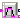
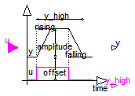
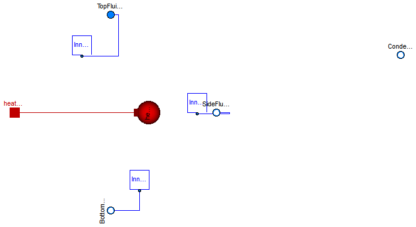
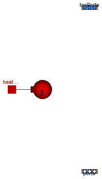

| Name | Description |
|---|---|
|  TriggeredTrapezoid | Triggered trapezoid generator |
| setReal | Set output signal to a time varying Real expression |
| TankWith3InletOutletArraysWithEvaporatorCondensor | Tank with Heating and Evaporation |
| Init | Enumeration to define initialization options |
| TankWithTopPorts | Tank with inlet/outlet ports and with inlet ports at the top |
type Init = enumeration(
GuessValues "GuessValues -- Guess values (not fixed) for p, T or h, X, C",
InitialValues "InitialValues -- Initial values for p, T or h, X, C",
SteadyStateMomentum "SteadyStateMomentum: Steady state momentum",
SteadyStateHydraulic
"SteadyStateHydraulic -- Hydraulic steady state (der(p)=0), guess value for p, initial values for T or h, X, C",
SteadyState
"SteadyState -- Steady state (guess values for p, T or h, X, C)")
"Enumeration to define initialization options";

The block TriggeredTrapezoid has a boolean input and a real output signal and requires the parameters amplitude, rising, falling and offset. The output signal y represents a trapezoidal signal dependent on the input signal u.
The behaviour is as follows: Assume the initial input to be false. In this case, the output will be offset. After a rising edge (i.e., the input changes from false to true), the output is rising during rising to the sum of offset and amplitude. In contrast, after a falling edge (i.e., the input changes from true to false), the output is falling during falling to a value of offset.
Note, that the case of edges before expiration of rising or falling is handled properly.
Extends from Modelica.Blocks.Interfaces.partialBooleanBlockIcon (Basic graphical layout of logical block).
| Type | Name | Default | Description |
|---|---|---|---|
| Real | amplitude | 1 | Amplitude of trapezoid |
| Time | rising | 0 | Rising duration of trapezoid [s] |
| Time | falling | rising | Falling duration of trapezoid [s] |
| Real | offset | 0 | Offset of output signal |
| Type | Name | Description |
|---|---|---|
| input BooleanInput | u | Connector of Boolean input signal |
| output RealOutput | y | Connector of Real output signal |
| output BooleanOutput | y_high |
block TriggeredTrapezoid "Triggered trapezoid generator"
extends Modelica.Blocks.Interfaces.partialBooleanBlockIcon;
parameter Real amplitude=1 "Amplitude of trapezoid";
parameter Modelica.SIunits.Time rising(final min=0)=0
"Rising duration of trapezoid";
parameter Modelica.SIunits.Time falling(final min=0)=rising
"Falling duration of trapezoid";
parameter Real offset=0 "Offset of output signal";
Modelica.Blocks.Interfaces.BooleanInput u "Connector of Boolean input signal";
Modelica.Blocks.Interfaces.RealOutput y "Connector of Real output signal";
protected
discrete Real endValue "Value of y at time of recent edge";
discrete Real rate "Current rising/falling rate";
discrete Modelica.SIunits.Time T "Predicted time of output reaching endValue";
public
Modelica.Blocks.Interfaces.BooleanOutput y_high;
initial equation
/* A start value of y is set, because pre(y) is present
to avoid a warning message from the compiler. However,
this setting does not have an effect, because y is initialized
correctly, before pre(y) is used
*/
pre(y) = 0;
equation
y_high = time < T;
y = if y_high then endValue - (T - time)*rate else endValue;
when {initial(),u,not u} then
endValue = if u then offset + amplitude else offset;
rate = if u and (rising > 0) then amplitude/rising else
if not u and (falling > 0) then -amplitude/falling else 0;
T = if u and not (rising > 0) or not u and not (falling
> 0) or not abs(amplitude) > 0 or initial() then time else time
+ (endValue - pre(y))/rate;
end when;
end TriggeredTrapezoid;
| Type | Name | Default | Description |
|---|---|---|---|
| Time varying input signal | |||
| RealInput | u | Set value of Real input | |
| Type | Name | Description |
|---|---|---|
| Time varying input signal | ||
| input RealInput | u | Set value of Real input |
block setReal "Set output signal to a time varying Real expression"Modelica.Blocks.Interfaces.RealInput u "Set value of Real input"; end setReal;

This tank has the same geometric variables as TankWith3InletOutletArrays plus the feature of a HeatPort and the possibility of evaporation. (Assumption: The gas is condensed emidiatly afterwards so that a liquid boiling fluid is created.)
The tank can be initialized with the following options:
Full steady state initialization is not supported, because the corresponding intial equations for temperature/enthalpy are undetermined (the flow rate through the port at steady state is zero).
| Type | Name | Default | Description |
|---|---|---|---|
| Area | crossArea | Tank area [m2] | |
| Area | top_pipeArea[n_TopPorts] | Area of outlet pipe [m2] | |
| Area | side_pipeArea[n_SidePorts] | Area of outlet pipe [m2] | |
| Area | bottom_pipeArea[n_BottomPorts] | Area of outlet pipe [m2] | |
| Height | height | 10 | Height of Tank [m] |
| Volume | V0 | 0 | Volume of the liquid when the level is zero [m3] |
| Real | side_heights[n_SidePorts] | zeros(n_SidePorts) | |
| Real | bottom_heights[n_BottomPorts] | zeros(n_BottomPorts) | |
| Real | top_heights[n_TopPorts] | fill(height, n_TopPorts) | |
| AbsolutePressure | p_ambient | 101325 | Tank surface pressure [Pa] |
| Temperature | T_ambient | 293.15 | Tank surface Temperature [K] |
| Integer | n_TopPorts | 1 | number of Top connectors |
| Integer | n_SidePorts | 1 | number of side connectors |
| Integer | n_BottomPorts | 1 | number of bootom connectors |
| Real | min_level_for_heating | ||
| Initialization | |||
| Height | level_start | Initial tank level [m] | |
| Init | initType | Init.GuessValues | Initialization option |
| Boolean | use_T_start | true | Use T_start if true, otherwise h_start |
| Temperature | T_start | if use_T_start then 293.15 e... | Start value of temperature [K] |
| SpecificEnthalpy | h_start | if use_T_start then Medium.s... | Start value of specific enthalpy [J/kg] |
| MassFraction | X_start[Medium.nX] | Medium.reference_X | Start value of mass fractions m_i/m [kg/kg] |
| Type | Name | Description |
|---|---|---|
| FluidPort_b | BottomFluidPort[n_BottomPorts] | |
| FluidPort_a | TopFluidPort[n_TopPorts] | |
| FluidPort_b | SideFluidPort[n_SidePorts] | |
| FluidPort_b | Condensed | |
| HeatPort_a | heatPort |
model TankWith3InletOutletArraysWithEvaporatorCondensor
"Tank with Heating and Evaporation"
import Modelica.SIunits.Conversions.*;
import Modelica.Fluid.Examples.AST_BatchPlant.BaseClasses.Init;
replaceable package Medium = Modelica.Media.Water.WaterIF97_ph
constrainedby Modelica.Media.Interfaces.PartialTwoPhaseMedium
"Medium in the component";
// parameter for Tank
parameter Modelica.SIunits.Area crossArea "Tank area";
parameter SI.Area top_pipeArea[n_TopPorts] "Area of outlet pipe";
parameter SI.Area side_pipeArea[n_SidePorts] "Area of outlet pipe";
parameter SI.Area bottom_pipeArea[n_BottomPorts] "Area of outlet pipe";
parameter Modelica.SIunits.Height height(min=0) = 10 "Height of Tank";
parameter SI.Volume V0=0 "Volume of the liquid when the level is zero";
constant Modelica.SIunits.Acceleration g=Modelica.Constants.g_n;
parameter Real side_heights[n_SidePorts]=zeros(n_SidePorts);
parameter Real bottom_heights[n_BottomPorts]=zeros(n_BottomPorts);
parameter Real top_heights[n_TopPorts]=fill(height, n_TopPorts);
parameter SI.Height level_start(min=0) "Initial tank level";
parameter Modelica.Fluid.Examples.AST_BatchPlant.BaseClasses.Init
initType = Init.GuessValues
"Initialization option";
parameter Boolean use_T_start=true "Use T_start if true, otherwise h_start";
parameter Medium.Temperature T_start=if use_T_start then 293.15 else
Medium.temperature_phX(p_ambient, h_start, X_start)
"Start value of temperature";
parameter Medium.SpecificEnthalpy h_start=if use_T_start then Medium.specificEnthalpy_pTX(
p_ambient, T_start, X_start[1:Medium.nXi]) else 1e4
"Start value of specific enthalpy";
parameter Medium.MassFraction X_start[Medium.nX]=Medium.reference_X
"Start value of mass fractions m_i/m";
parameter Medium.AbsolutePressure p_ambient=101325 "Tank surface pressure";
parameter Medium.Temperature T_ambient=293.15 "Tank surface Temperature";
parameter Integer n_TopPorts=1 "number of Top connectors";
parameter Integer n_SidePorts=1 "number of side connectors";
parameter Integer n_BottomPorts=1 "number of bootom connectors";
Medium.BaseProperties medium(
preferredMediumStates=true,
p(start=p_ambient),
T(start=T_start),
Xi(start=X_start[1:Medium.nXi]));
Modelica.SIunits.Height level(
stateSelect=StateSelect.prefer,
min=0,
max=height) "Level height of tank";
SI.Volume V(stateSelect=StateSelect.never) "Actual tank volume";
SI.Energy U "Internal energy of tank volume";
Real m(quantity=Medium.mediumName, unit="kg") "Mass of tank volume";
Real mXi[Medium.nXi](quantity=Medium.substanceNames, each unit="kg")
"Component masses of the independent substances";
// additional variables
Real H_flow_BottomPorts[n_BottomPorts];
Real H_flow_SidePorts[n_SidePorts];
Real H_flow_TopPorts[n_TopPorts];
Real m_flow_BottomPorts[n_BottomPorts];
Real m_flow_SidePorts[n_SidePorts];
Real m_flow_TopPorts[n_TopPorts];
Real m_flow_BottomPorts_pos[n_BottomPorts];
Real m_flow_SidePorts_pos[n_SidePorts];
Real m_flow_TopPorts_pos[n_TopPorts];
Real m_flow_pos;
Medium.MassFlowRate mXi_flow_topPorts[n_TopPorts,Medium.nXi];
Medium.MassFlowRate mXi_flowBottomPorts[n_BottomPorts,Medium.nXi];
Medium.MassFlowRate mXi_flow_sidePorts[n_SidePorts,Medium.nXi];
// Connectors and InnerTanks
Modelica.Fluid.Interfaces.FluidPort_b BottomFluidPort[n_BottomPorts](
redeclare package Medium = Medium,
m_flow(each start=0));
Modelica.Fluid.Interfaces.FluidPort_a TopFluidPort[n_TopPorts](
redeclare package Medium = Medium,
m_flow(each start=0));
Modelica.Fluid.Interfaces.FluidPort_b SideFluidPort[n_SidePorts](
redeclare package Medium = Medium,
m_flow(each start=0));
Modelica.Fluid.Examples.AST_BatchPlant.BaseClasses.InnerTank InnerTankTop[n_TopPorts](
each h=medium.h,
each p_ambient=p_ambient,
each d=medium.d,
each Xi = medium.Xi,
aboveLevel={level - top_heights[i] for i in 1:n_TopPorts},
pipeArea={top_pipeArea[i] for i in 1:n_TopPorts},
redeclare package Medium = Medium);
Modelica.Fluid.Examples.AST_BatchPlant.BaseClasses.InnerTank
InnerTankSide[ n_SidePorts](
each h=medium.h,
each p_ambient=p_ambient,
each d=medium.d,
each Xi = medium.Xi,
aboveLevel={level - side_heights[i] for i in 1:n_SidePorts},
pipeArea={side_pipeArea[i] for i in 1:n_SidePorts},
redeclare package Medium = Medium);
Modelica.Fluid.Examples.AST_BatchPlant.BaseClasses.InnerTank
InnerTankBottom[ n_BottomPorts](
each h=medium.h,
each p_ambient=p_ambient,
each d=medium.d,
each Xi = medium.Xi,
aboveLevel={level - bottom_heights[i] for i in 1:n_BottomPorts},
pipeArea={bottom_pipeArea[i] for i in 1:n_BottomPorts},
redeclare package Medium = Medium);
Modelica.Fluid.Interfaces.FluidPort_b Condensed(redeclare package Medium =
Medium);
// Heat transfer through boundary
replaceable model HeatTransfer =
Modelica.Fluid.Vessels.BaseClasses.HeatTransfer.IdealHeatTransfer
constrainedby
Modelica.Fluid.Vessels.BaseClasses.HeatTransfer.PartialVesselHeatTransfer
"Wall heat transfer";
HeatTransfer heatTransfer(
redeclare final package Medium = Medium,
final n=1,
final states = {medium.state},
surfaceAreas={crossArea+2*sqrt(crossArea*Modelica.Constants.pi)*level},
final use_k = true);
Modelica.Thermal.HeatTransfer.Interfaces.HeatPort_a heatPort;
// parameter for Evaporator
parameter Real min_level_for_heating;
Medium.SaturationProperties sat
"State vector to compute saturation properties";
Medium.SpecificEnthalpy h_v=Medium.dewEnthalpy(sat)
"specific enthalpy of vapour";
Medium.SpecificEnthalpy h_l=Medium.bubbleEnthalpy(sat)
"specific enthalpy of liquid";
Medium.SpecificEnthalpy h "'is'specific enthalpy of liquid";
Medium.Density rho_v=Medium.dewDensity(sat) "density in vapour phase";
Medium.Density rho_l=Medium.bubbleDensity(sat) "density in liquid phase";
Medium.Density rho "'is' density in liquid phase";
equation
H_flow_TopPorts = InnerTankTop.H_flow;
m_flow_TopPorts = InnerTankTop.m_flow;
mXi_flow_topPorts = InnerTankTop.mXi_flow;
H_flow_SidePorts = InnerTankSide.H_flow;
m_flow_SidePorts = InnerTankSide.m_flow;
mXi_flow_sidePorts = InnerTankSide.mXi_flow;
H_flow_BottomPorts = InnerTankBottom.H_flow;
m_flow_BottomPorts = InnerTankBottom.m_flow;
mXi_flowBottomPorts = InnerTankBottom.mXi_flow;
for i in 1:n_BottomPorts loop
m_flow_BottomPorts_pos[i] = (if m_flow_BottomPorts[i] > 0 then
m_flow_BottomPorts[i] else 0);
end for;
for i in 1:n_SidePorts loop
m_flow_SidePorts_pos[i] = if m_flow_SidePorts[i] > 0 then m_flow_SidePorts[
i] else 0;
end for;
for i in 1:n_TopPorts loop
m_flow_TopPorts_pos[i] = if m_flow_TopPorts[i] > 0 then m_flow_TopPorts[i] else
0;
end for;
for i in 1:n_BottomPorts loop
connect(InnerTankBottom[i].port, BottomFluidPort[i]);
end for;
for i in 1:n_TopPorts loop
connect(InnerTankTop[i].port, TopFluidPort[i]);
end for;
for i in 1:n_SidePorts loop
connect(InnerTankSide[i].port, SideFluidPort[i]);
end for;
medium.p = p_ambient;
// Mass balance
der(m) = sum(m_flow_BottomPorts) + sum(m_flow_SidePorts) + sum(
m_flow_TopPorts) + Condensed.m_flow;
// Energy balance
U = m*medium.h - p_ambient*V "Internal energy of fluid";
m = V*medium.d "Mass of fluid";
V = crossArea*level + V0 "Volume of fluid";
mXi = m*medium.Xi "Mass of fluid components";
sat.psat = medium.p;
sat.Tsat = Medium.saturationTemperature(medium.p);
if noEvent(medium.T < sat.Tsat) then
if Medium.singleState then
der(U) = sum(H_flow_BottomPorts) + sum(H_flow_SidePorts) + sum(
H_flow_TopPorts) + Condensed.m_flow*actualStream(Condensed.h_outflow) + heatTransfer.Q_flows[1]
"Mechanical work is neglected";
else
der(U) = sum(H_flow_BottomPorts) + sum(H_flow_SidePorts) + sum(
H_flow_TopPorts) + Condensed.m_flow*actualStream(Condensed.h_outflow) - p_ambient*der(V) +
heatTransfer.Q_flows[1];
end if;
Condensed.h_outflow = h;
Condensed.m_flow = 0;
rho = medium.d;
h = medium.h;
else
if Medium.singleState then
der(U) = sum(H_flow_BottomPorts) + sum(H_flow_SidePorts) + sum(H_flow_TopPorts)
+ Condensed.m_flow*actualStream(Condensed.h_outflow)
"Mechanical work is neglected";
else
der(U) = sum(H_flow_BottomPorts) + sum(H_flow_SidePorts) + sum(
H_flow_TopPorts) + Condensed.m_flow*actualStream(Condensed.h_outflow) - p_ambient*der(V);
end if;
Condensed.h_outflow = h;
Condensed.m_flow = -heatTransfer.Q_flows[1]/(h_v - h_l);
rho = rho_l;//Density = liquid Densety
h = h_l; //Enthalpy = liquid Enthalpy
if noEvent(heatPort.Q_flow > 0.0) then
assert(noEvent(abs(m_flow_pos) <= 0.01), "Attempt to fill tank while evaporating.");
end if;
end if;
m_flow_pos = sum(m_flow_TopPorts_pos) + sum(m_flow_SidePorts_pos) + sum(
m_flow_BottomPorts_pos);
for i in 1:Medium.nXi loop
der(mXi[i]) = sum(mXi_flowBottomPorts[:,i]) +
sum(mXi_flow_sidePorts[:,i]) +
sum(mXi_flow_topPorts[:,i]);
end for;
assert(level < height, "
Tank is overflowing.
");
assert(not (heatPort.Q_flow > 0.0 and level <= min_level_for_heating), "
Attempting to heat an empty tank
");
initial equation
if initType == Init.GuessValues then
// no initial equations
elseif initType == Init.InitialValues then
level = level_start;
if use_T_start then
medium.T = T_start;
else
medium.h = h_start;
end if;
medium.Xi = X_start[1:Medium.nXi];
elseif initType == Init.SteadyStateHydraulic then
der(level) = 0;
if use_T_start then
medium.T = T_start;
else
medium.h = h_start;
end if;
medium.Xi = X_start[1:Medium.nXi];
else
assert(false, "Unsupported initialization option");
end if;
equation
connect(heatPort, heatTransfer.heatPorts[1]);
end TankWith3InletOutletArraysWithEvaporatorCondensor;
 Modelica.Fluid.Examples.AST_BatchPlant.BaseClasses.InnerTank
Modelica.Fluid.Examples.AST_BatchPlant.BaseClasses.InnerTank
| Type | Name | Default | Description |
|---|---|---|---|
| MassFraction | Xi[Medium.nXi] | Actual mass fractions of fluid in tank [kg/kg] |
| Type | Name | Description |
|---|---|---|
| FluidPort_a | port |
model InnerTank
replaceable package Medium =
Modelica.Media.Interfaces.PartialMedium "Medium in the component";
Modelica.Fluid.Interfaces.FluidPort_a port(redeclare package Medium =
Medium);
Boolean m_flow_negative( start = true) "true= massflow out of tank";
constant Modelica.SIunits.Acceleration g=Modelica.Constants.g_n;
input Real aboveLevel;
input Real d;
input Real p_ambient;
input Real h;
input Medium.MassFraction Xi[Medium.nXi]
"Actual mass fractions of fluid in tank";
input Real pipeArea;
output Real H_flow;
output Real m_flow;
output Medium.MassFlowRate mXi_flow[Medium.nXi]
"= port.mXi_flow (used to transform vector of connectors in vector of Real numbers)";
equation
m_flow_negative = (pre(m_flow_negative) and not port.p>p_ambient) or (port.m_flow < -1e-6);
if noEvent(aboveLevel > 0) then
port.p = aboveLevel*g*d + p_ambient - smooth(2,noEvent(if noEvent(m_flow < 0) then m_flow^2/(2*d*pipeArea^2) else 0));
else
if pre(m_flow_negative) then
port.m_flow = 0;
else
port.p = p_ambient;
end if;
end if;
H_flow = port.m_flow*actualStream(port.h_outflow);
m_flow = port.m_flow;
mXi_flow = port.m_flow*actualStream(port.Xi_outflow);
port.h_outflow = h;
port.Xi_outflow = Xi;
end InnerTank;
 Modelica.Fluid.Examples.AST_BatchPlant.BaseClasses.Controller
Modelica.Fluid.Examples.AST_BatchPlant.BaseClasses.Controller
| Type | Name | Default | Description |
|---|---|---|---|
| Real | w_dilution | 0.003 | |
| Real | w_concentrate | 0.005 | |
| Real | startTime | 1 | |
| Real | T5_batch_level | 0.211 |
| Type | Name | Description |
|---|---|---|
| Port_Sensors | sensors | |
| Port_Actuators | actuators |
model ControllerModelica.Fluid.Examples.AST_BatchPlant.BaseClasses.ControllerUtilities.Port_Sensors sensors; Modelica.Fluid.Examples.AST_BatchPlant.BaseClasses.ControllerUtilities.Port_Actuators actuators; parameter Real w_dilution=0.003; parameter Real w_concentrate=0.005; parameter Real startTime=1; parameter Real T5_batch_level=0.211;Modelica.StateGraph.InitialStep InitialStep1; Modelica.StateGraph.Transition Transition1(enableTimer=true, waitTime= startTime); Modelica.StateGraph.Step Step1; Modelica.StateGraph.Transition Transition2(condition=LIS_301 >= 0.13); Modelica.StateGraph.Step Step2; Modelica.StateGraph.Transition Transition3( condition=true, enableTimer=true, waitTime=500); Modelica.StateGraph.Step Step3; Modelica.StateGraph.Transition Transition4(condition=LIS_301 <= 0.01); Modelica.StateGraph.Step Step4; Modelica.StateGraph.Transition Transition5(condition=T5_idle); Modelica.StateGraph.Step Step5; Modelica.StateGraph.Transition Transition6(condition=LIS_501 >= T5_batch_level); Modelica.StateGraph.Step Step6; Modelica.StateGraph.Transition Transition7( condition=true, enableTimer=true, waitTime=300); Modelica.StateGraph.Parallel Parallel1; Modelica.StateGraph.Step Step7; Modelica.StateGraph.Step Step8; Modelica.StateGraph.Step Step9; Modelica.StateGraph.Step Step10; Modelica.StateGraph.Step Step11; Modelica.StateGraph.Step Step12; Modelica.StateGraph.Step Step13; Modelica.StateGraph.Step Step14; Modelica.StateGraph.Transition Transition8(condition=T7_idle); Modelica.StateGraph.Transition Transition9(condition=LIS_501 <= 0.01); Modelica.StateGraph.Transition Transition10(condition=TIS_702 <= 298); Modelica.StateGraph.Transition Transition11(condition=LIS_701 <= 0.01); Modelica.StateGraph.Transition Transition12(condition=TIS_602 <= 298); Modelica.StateGraph.Transition Transition13(condition=LIS_601 <= 0.01); Real LIS_301; Real LIS_501; Real LIS_601; Real LIS_701; Real QI_302; Real QIS_502; Real TIS_602; Real TIS_702; Boolean T5_idle; Boolean T7_idle;Modelica.StateGraph.TransitionWithSignal TransitionWithSignal1; Modelica.Blocks.Sources.BooleanExpression BooleanExpression1(y=time > 2500); equation LIS_301 = sensors.LIS_301; LIS_501 = sensors.LIS_501; LIS_601 = sensors.LIS_601; LIS_701 = sensors.LIS_701; QI_302 = sensors.QI_302; QIS_502 = sensors.QIS_502; TIS_602 = sensors.TIS_602; TIS_702 = sensors.TIS_702; T5_idle = not actuators.V12 and not actuators.V15 and not actuators.T5_Heater and sensors.LIS_501 < 0.01; T7_idle = not actuators.V15 and not actuators.V18 and not actuators. T7_Cooling and sensors.LIS_701 < 0.01; actuators.P1 = Step10.active; actuators.P2 = Step13.active; actuators.T5_Heater = Step6.active; actuators.T7_Cooling = Step9.active; actuators.T6_Cooling = Step12.active; actuators.V1 = Step10.active; actuators.V2 = false; actuators.V3 = Step10.active; actuators.V4 = false; actuators.V5 = Step13.active; actuators.V6 = Step13.active; actuators.V8 = Step1.active; actuators.V9 = Step2.active; actuators.V10 = false; actuators.V11 = Step3.active; actuators.V12 = Step5.active; actuators.V15 = Step8.active; actuators.V18 = Step10.active; actuators.V19 = false; actuators.V20 = Step13.active; actuators.V21 = false; actuators.V22 = Step10.active; actuators.V23 = Step10.active; actuators.V25 = Step13.active; actuators.V24 = Step13.active;connect(InitialStep1.outPort[1], Transition1.inPort); connect(Transition1.outPort, Step1.inPort[1]); connect(Step1.outPort[1], Transition2.inPort); connect(Transition2.outPort, Step2.inPort[1]); connect(Step2.outPort[1], Transition3.inPort); connect(Transition3.outPort, Step3.inPort[1]); connect(Step3.outPort[1], Transition4.inPort); connect(Transition4.outPort, Step4.inPort[1]); connect(Step4.outPort[1], Transition5.inPort); connect(Transition5.outPort, Step5.inPort[1]); connect(Step5.outPort[1], Transition6.inPort); connect(Transition6.outPort, Step6.inPort[1]); connect(Step6.outPort[1], Transition7.inPort); connect(Step12.inPort[1], Parallel1.split[1]); connect(Step12.outPort[1], Transition12.inPort); connect(Transition12.outPort, Step13.inPort[1]); connect(Step13.outPort[1], Transition13.inPort); connect(Transition13.outPort, Step14.inPort[1]); connect(Step14.outPort[1], Parallel1.join[1]); connect(Step7.inPort[1], Parallel1.split[2]); connect(Step7.outPort[1], Transition8.inPort); connect(Transition8.outPort, Step8.inPort[1]); connect(Step8.outPort[1], Transition9.inPort); connect(Transition9.outPort, Step9.inPort[1]); connect(Step9.outPort[1], Transition10.inPort); connect(Transition10.outPort, Step10.inPort[1]); connect(Step10.outPort[1], Transition11.inPort); connect(Transition11.outPort, Step11.inPort[1]); connect(Step11.outPort[1], Parallel1.join[2]); connect(Transition7.outPort, Parallel1.inPort); connect(TransitionWithSignal1.inPort, Parallel1.outPort); connect(TransitionWithSignal1.outPort, InitialStep1.inPort[1]); connect(BooleanExpression1.y, TransitionWithSignal1.condition); end Controller;

Model of a tank that is open to the environment at the fixed pressure
p_ambient.
The tank is filled with a single or multiple-substance liquid,
assumed to have uniform temperature and mass fractions.
At the top of the tank over the maximal fill level height a vector of FluidPorts, called topPorts, is present. The assumption is made that fluid flows always in to the tank via these ports (and never back in to the connector).
The vector of connectors ports are fluid ports at the bottom and side of the tank at a defineable height. Fluid can flow either out of or in to this port. The fluid level of the tank may be below one of these ports. This case is approximated by introducing a large pressure flow coefficient so that the mass flow rate through this port is very small in this case.
If the tank starts to over flow (i.e., level > height), an assertion is triggered.
When the diagram layer is open in the plot environment, the level of the tank is dynamically visualized. Note, the speed of the diagram animation in Dymola can be set via command animationSpeed(), e.g., animationSpeed(speed = 10)
Extends from Modelica.Fluid.Interfaces.PartialLumpedVolume (Lumped volume with mass and energy balance).
| Type | Name | Default | Description |
|---|---|---|---|
| Height | height | Maximum level of tank before it overflows [m] | |
| Area | crossArea | Area of tank [m2] | |
| Volume | V0 | 0 | Volume of the liquid when level = 0 [m3] |
| replaceable package Medium | PartialMedium | Medium in the component | |
| Volume | fluidVolume | V | Volume [m3] |
| VesselPortsData | portsData[nPorts] | Data of inlet/outlet ports at side and bottom of tank | |
| Assumptions | |||
| Ambient | |||
| AbsolutePressure | p_ambient | system.p_ambient | Tank surface pressure [Pa] |
| Temperature | T_ambient | system.T_ambient | Tank surface Temperature [K] |
| Dynamics | |||
| Dynamics | energyDynamics | system.energyDynamics | Formulation of energy balance |
| Dynamics | massDynamics | system.massDynamics | Formulation of mass balance |
| Heat transfer | |||
| Boolean | use_HeatTransfer | false | = true to use the HeatTransfer model |
| Initialization | |||
| Height | level_start | 0.5*height | Start value of tank level [m] |
| AbsolutePressure | p_start | p_ambient | Start value of pressure [Pa] |
| Boolean | use_T_start | true | = true, use T_start, otherwise h_start |
| Temperature | T_start | if use_T_start then system.T... | Start value of temperature [K] |
| SpecificEnthalpy | h_start | if use_T_start then Medium.s... | Start value of specific enthalpy [J/kg] |
| MassFraction | X_start[Medium.nX] | Medium.X_default | Start value of mass fractions m_i/m [kg/kg] |
| ExtraProperty | C_start[Medium.nC] | fill(0, Medium.nC) | Start value of trace substances |
| Advanced | |||
| Port properties | |||
| Real | hysteresisFactor | 0.1 | Hysteresis for empty pipe = diameter*hysteresisFactor |
| Boolean | stiffCharacteristicForEmptyPort | false | =true, if steep pressure loss characteristic for empty pipe port |
| Real | zetaLarge | 1e5 | Large pressure loss factor if mass flows out of empty pipe port |
| MassFlowRate | m_flow_small | system.m_flow_small | Regularization range at zero mass flow rate [kg/s] |
| Type | Name | Description |
|---|---|---|
| VesselFluidPorts_a | topPorts[nTopPorts] | Inlet ports over height at top of tank (fluid flows only from the port in to the tank) |
| VesselFluidPorts_b | ports[nPorts] | inlet/outlet ports at bottom or side of tank (fluid flows in to or out of port; a port might be above the fluid level) |
| HeatPort_a | heatPort |
model TankWithTopPorts
"Tank with inlet/outlet ports and with inlet ports at the top"
import Modelica.Constants;
import Modelica.Fluid.Fittings.BaseClasses.lossConstant_D_zeta;
import Modelica.Fluid.Utilities.regRoot2;
import Modelica.Fluid.Vessels.BaseClasses.VesselPortsData;
SI.Height level(stateSelect=StateSelect.prefer, start=level_start)
"Fluid level in the tank";
//Tank geometry
parameter SI.Height height "Maximum level of tank before it overflows";
parameter SI.Area crossArea "Area of tank";
parameter SI.Volume V0=0 "Volume of the liquid when level = 0";
//Ambient
parameter Medium.AbsolutePressure p_ambient=system.p_ambient
"Tank surface pressure";
parameter Medium.Temperature T_ambient=system.T_ambient
"Tank surface Temperature";
//Initialization
parameter SI.Height level_start(min=0) = 0.5*height
"Start value of tank level";
//Mass and energy balance
extends Modelica.Fluid.Interfaces.PartialLumpedVolume(
final fluidVolume = V,
final initialize_p = false,
final p_start = p_ambient);
//Port definitions
parameter Integer nTopPorts = 0 "Number of inlet ports above height (>= 1)";
Vessels.BaseClasses.VesselFluidPorts_a topPorts[nTopPorts](redeclare package
Medium = Medium, m_flow(each start=0, each min=0))
"Inlet ports over height at top of tank (fluid flows only from the port in to the tank)";
parameter Integer nPorts = 0
"Number of inlet/outlet ports (on bottom and on the side)";
parameter Modelica.Fluid.Vessels.BaseClasses.VesselPortsData portsData[
nPorts]
"Data of inlet/outlet ports at side and bottom of tank";
Vessels.BaseClasses.VesselFluidPorts_b ports[nPorts](redeclare package Medium
= Medium, m_flow(each start=0))
"inlet/outlet ports at bottom or side of tank (fluid flows in to or out of port; a port might be above the fluid level)";
// Heat transfer through boundary
parameter Boolean use_HeatTransfer = false
"= true to use the HeatTransfer model";
replaceable model HeatTransfer =
Modelica.Fluid.Vessels.BaseClasses.HeatTransfer.IdealHeatTransfer
constrainedby
Modelica.Fluid.Vessels.BaseClasses.HeatTransfer.PartialVesselHeatTransfer
"Wall heat transfer";
HeatTransfer heatTransfer(
redeclare final package Medium = Medium,
final n=1,
final states = {medium.state},
surfaceAreas={crossArea+2*sqrt(crossArea*Modelica.Constants.pi)*level},
final use_k = use_HeatTransfer);
Modelica.Thermal.HeatTransfer.Interfaces.HeatPort_a heatPort if use_HeatTransfer;
// Advanced
parameter Real hysteresisFactor(min=0) = 0.1
"Hysteresis for empty pipe = diameter*hysteresisFactor";
parameter Boolean stiffCharacteristicForEmptyPort = false
"=true, if steep pressure loss characteristic for empty pipe port";
parameter Real zetaLarge(min=0) = 1e5
"Large pressure loss factor if mass flows out of empty pipe port";
parameter SI.MassFlowRate m_flow_small(min=0) = system.m_flow_small
"Regularization range at zero mass flow rate";
// Tank properties
SI.Volume V(stateSelect=StateSelect.never) "Actual tank volume";
Medium.EnthalpyFlowRate H_flow_top[nTopPorts]
"Enthalpy flow rates from the top ports in to the tank";
Medium.EnthalpyFlowRate port_b_H_flow_bottom[nPorts]
"Enthalpy flow rates from the bottom ports in to the tank";
Medium.MassFlowRate mXi_flow_top[nTopPorts, Medium.nXi]
"Substance mass flow rates from the top ports into the tank";
Medium.MassFlowRate port_b_mXi_flow_bottom[nPorts, Medium.nXi]
"Substance mass flow rates from the bottom ports into the tank";
Medium.MassFlowRate mC_flow_top[nTopPorts, Medium.nC]
"Trace substance mass flow rates from the top ports into the tank";
Medium.MassFlowRate port_b_mC_flow_bottom[nPorts, Medium.nC]
"Trace substance mass flow rates from the bottom ports into the tank";
protected
SI.Area bottomArea[nPorts];
SI.Diameter ports_emptyPipeHysteresis[nPorts];
SI.Length levelAbovePort[nPorts] "Height of fluid over bottom ports";
Boolean ports_m_flow_out[nPorts](each start = true, each fixed=true);
Boolean aboveLevel[nPorts] "= true, if level >= ports[i].height";
Real zetas_out[nPorts];
Modelica.Blocks.Interfaces.RealInput portsData_diameter[nPorts] = portsData.diameter if nPorts > 0;
Modelica.Blocks.Interfaces.RealInput portsData_diameter2[nPorts];
Modelica.Blocks.Interfaces.RealInput portsData_height[nPorts] = portsData.height if nPorts > 0;
Modelica.Blocks.Interfaces.RealInput portsData_height2[nPorts];
equation
assert(level <= height, "Tank starts to overflow (level = height = " + String(level) + ")");
assert(m>=0, "Mass in tank is zero");
// Compute constant data
connect(portsData_diameter, portsData_diameter2);
connect(portsData_height,portsData_height2);
for i in 1:nPorts loop
bottomArea[i]=Constants.pi*(portsData_diameter2[i]/2)^2;
ports_emptyPipeHysteresis[i] = portsData_diameter2[i]*hysteresisFactor;
end for;
// Only one connection allowed to a port to avoid unwanted ideal mixing
/*
for i in 1:nTopPorts loop
assert(cardinality(topPorts[i]) <= 1,"
topPorts[" + String(i) + "] of volume can at most be connected to one component.
If two or more connections are present, ideal mixing takes
place with these connections which is usually not the intention
of the modeller.
");
end for;
for i in 1:nPorts loop
assert(cardinality(ports[i]) <= 1,"
ports[" + String(i) + "] of volume can at most be connected to one component.
If two or more connections are present, ideal mixing takes
place with these connections which is usually not the intention
of the modeller.
");
end for;
*/
// Total quantities
medium.p = p_ambient;
V = crossArea*level + V0 "Volume of fluid";
// Mass balances
mb_flow = sum(topPorts.m_flow) + sum(ports.m_flow);
for i in 1:Medium.nXi loop
mbXi_flow[i] = sum(mXi_flow_top[:,i]) + sum(port_b_mXi_flow_bottom[:,i]);
end for;
for i in 1:Medium.nC loop
mbC_flow[i] = sum(mC_flow_top[:,i]) + sum(port_b_mC_flow_bottom[:,i]);
end for;
// Energy balance
Hb_flow = sum(H_flow_top) + sum(port_b_H_flow_bottom);
Qb_flow = heatTransfer.Q_flows[1];
if Medium.singleState or energyDynamics == Types.Dynamics.SteadyState then
Wb_flow = 0
"Mechanical work is neglected, since also neglected in medium model (otherwise unphysical small temperature change, if tank level changes)";
else
Wb_flow = -p_ambient*der(V);
end if;
// Properties at top ports
for i in 1:nTopPorts loop
// It is assumed that fluid flows only from one of the top ports in to the tank and never vice versa
H_flow_top[i] = topPorts[i].m_flow*actualStream(topPorts[i].h_outflow);
mXi_flow_top[i,:] = topPorts[i].m_flow*actualStream(topPorts[i].Xi_outflow);
mC_flow_top[i,:] = topPorts[i].m_flow*actualStream(topPorts[i].C_outflow);
topPorts[i].p = p_ambient;
topPorts[i].h_outflow = h_start;
topPorts[i].Xi_outflow = X_start[1:Medium.nXi];
topPorts[i].C_outflow = C_start;
/*
assert(topPorts[i].m_flow > -1, "Mass flows out of tank via topPorts[" + String(i) + "]\n" +
"This indicates a wrong model");
*/
end for;
// Properties at bottom ports
for i in 1:nPorts loop
port_b_H_flow_bottom[i] = ports[i].m_flow*actualStream(ports[i].h_outflow);
port_b_mXi_flow_bottom[i,:] = ports[i].m_flow*actualStream(ports[i].Xi_outflow);
port_b_mC_flow_bottom[i,:] = ports[i].m_flow*actualStream(ports[i].C_outflow);
aboveLevel[i] = level >= (portsData_height2[i] + ports_emptyPipeHysteresis[i])
or pre(aboveLevel[i]) and level >= (portsData_height2[i] - ports_emptyPipeHysteresis[i]);
levelAbovePort[i] = if aboveLevel[i] then level - portsData_height2[i] else 0;
ports[i].h_outflow = medium.h;
ports[i].Xi_outflow = medium.Xi;
ports[i].C_outflow = C;
if stiffCharacteristicForEmptyPort then
// If port is above fluid level, use large zeta if fluid flows out of port (= small mass flow rate)
zetas_out[i] = 1 + (if aboveLevel[i] then 0 else zetaLarge);
ports[i].p = p_ambient + levelAbovePort[i]*system.g*medium.d
+ Modelica.Fluid.Utilities.regSquare2(ports[i].m_flow, m_flow_small,
lossConstant_D_zeta(portsData_diameter2[i], 0.01)/medium.d,
lossConstant_D_zeta(portsData_diameter2[i], zetas_out[i])/medium.d);
ports_m_flow_out[i] = false;
else
// Handling according to Remelhe/Poschlad
ports_m_flow_out[i] = (pre(ports_m_flow_out[i]) and not ports[i].p>p_ambient)
or ports[i].m_flow < -1e-6;
if aboveLevel[i] then
ports[i].p = p_ambient + levelAbovePort[i]*system.g*medium.d -
smooth(2,noEvent(if ports[i].m_flow < 0 then ports[i].m_flow^2/
(2*medium.d*bottomArea[i]^2) else 0));
else
if pre(ports_m_flow_out[i]) then
ports[i].m_flow = 0;
else
ports[i].p = p_ambient;
end if;
end if;
zetas_out[i] =0;
end if;
end for;
initial equation
for i in 1:nPorts loop
pre(aboveLevel[i]) = level_start >= portsData_height2[i];
end for;
if massDynamics == Types.Dynamics.FixedInitial then
level = level_start;
elseif massDynamics == Types.Dynamics.SteadyStateInitial then
der(level) = 0;
end if;
equation
connect(heatPort, heatTransfer.heatPorts[1]);
end TankWithTopPorts;
 Modelica.Fluid.Examples.AST_BatchPlant.BaseClasses.TankWith3InletOutletArraysWithEvaporatorCondensor.HeatTransfer
Modelica.Fluid.Examples.AST_BatchPlant.BaseClasses.TankWith3InletOutletArraysWithEvaporatorCondensor.HeatTransfer

| Type | Name | Default | Description |
|---|---|---|---|
| Ambient | |||
| CoefficientOfHeatTransfer | k | 0 | Heat transfer coefficient to ambient [W/(m2.K)] |
| Temperature | T_ambient | system.T_ambient | Ambient temperature [K] |
| Internal Interface | |||
| replaceable package Medium | PartialMedium | Medium in the component | |
| Integer | n | 1 | Number of heat transfer segments |
| Boolean | use_k | false | = true to use k value for thermal isolation |
| Type | Name | Description |
|---|---|---|
| HeatPorts_a | heatPorts[n] | Heat port to component boundary |
replaceable model HeatTransfer =
Modelica.Fluid.Vessels.BaseClasses.HeatTransfer.IdealHeatTransfer
constrainedby
Modelica.Fluid.Vessels.BaseClasses.HeatTransfer.PartialVesselHeatTransfer
"Wall heat transfer";
Modelica.Fluid.Examples.AST_BatchPlant.BaseClasses.TankWithTopPorts.HeatTransfer
| Type | Name | Default | Description |
|---|---|---|---|
| Ambient | |||
| CoefficientOfHeatTransfer | k | 0 | Heat transfer coefficient to ambient [W/(m2.K)] |
| Temperature | T_ambient | system.T_ambient | Ambient temperature [K] |
| Internal Interface | |||
| replaceable package Medium | PartialMedium | Medium in the component | |
| Integer | n | 1 | Number of heat transfer segments |
| Boolean | use_k | false | = true to use k value for thermal isolation |
| Type | Name | Description |
|---|---|---|
| HeatPorts_a | heatPorts[n] | Heat port to component boundary |
replaceable model HeatTransfer =
Modelica.Fluid.Vessels.BaseClasses.HeatTransfer.IdealHeatTransfer
constrainedby
Modelica.Fluid.Vessels.BaseClasses.HeatTransfer.PartialVesselHeatTransfer
"Wall heat transfer";